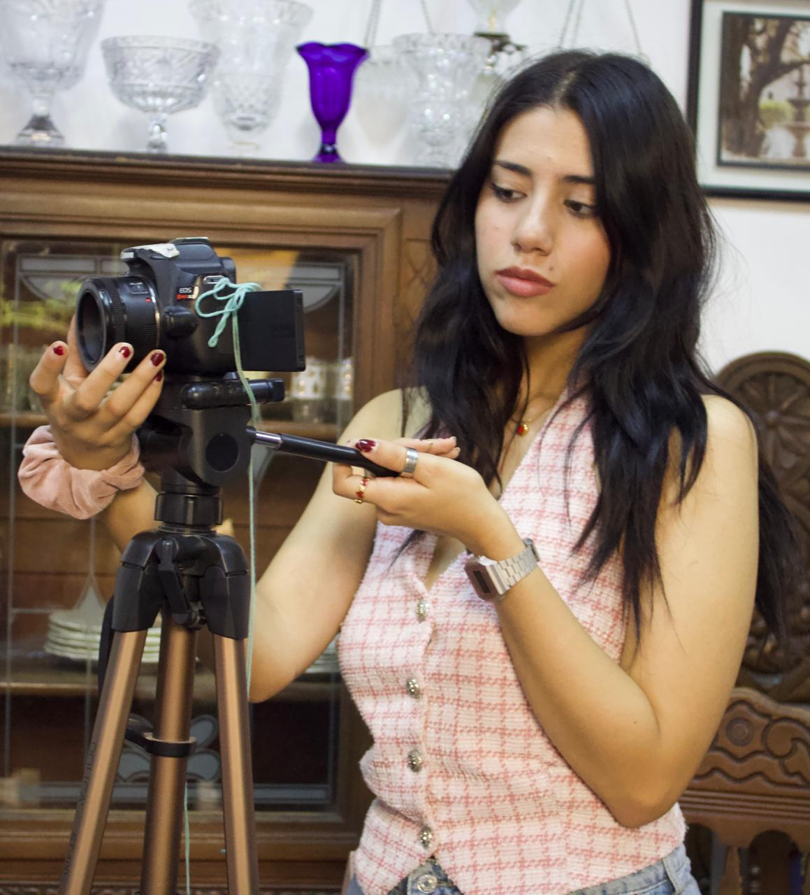
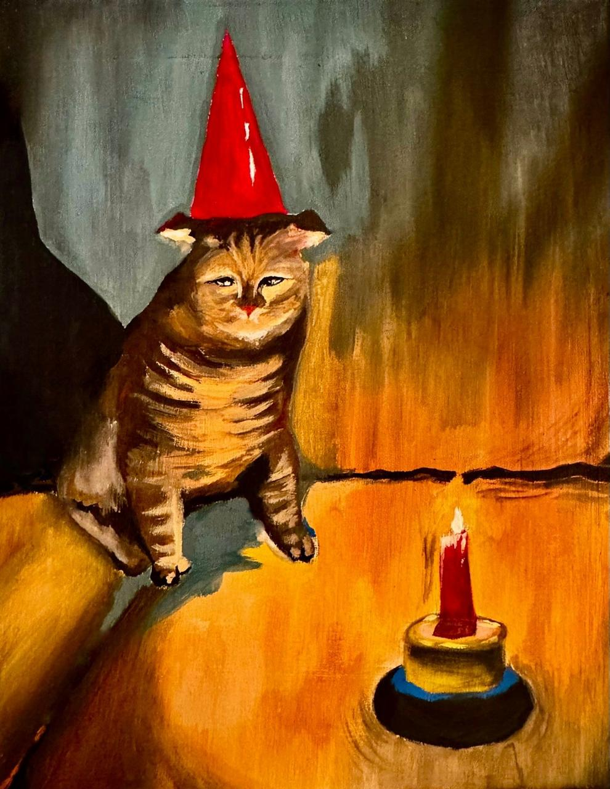
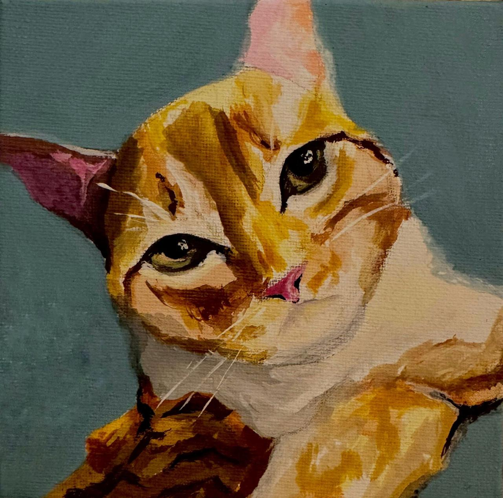
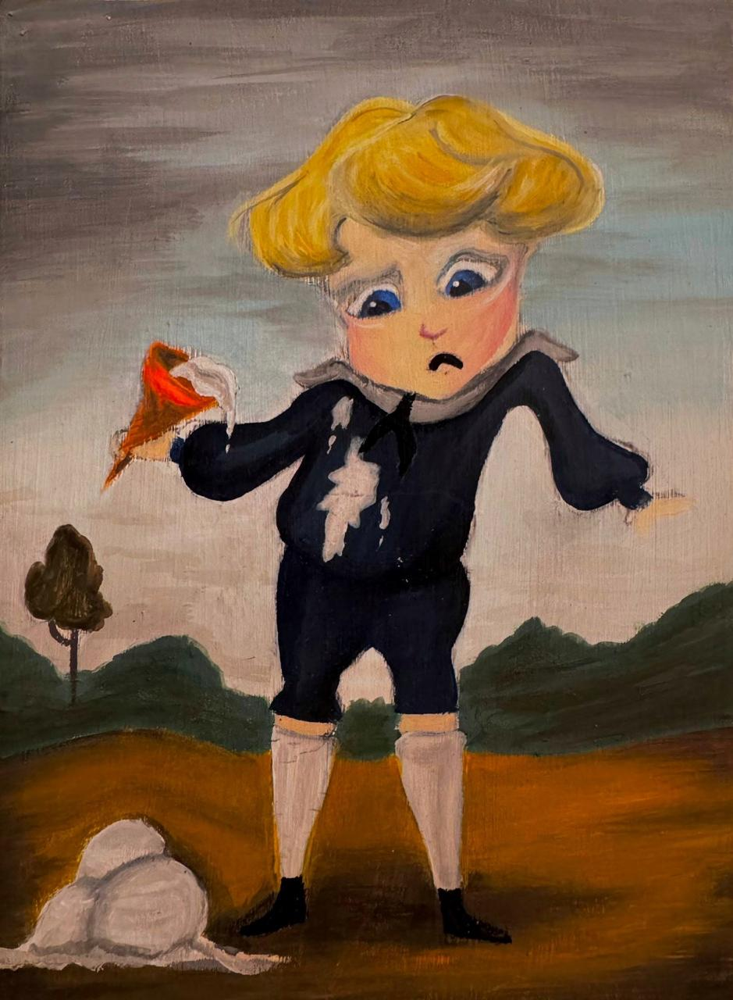
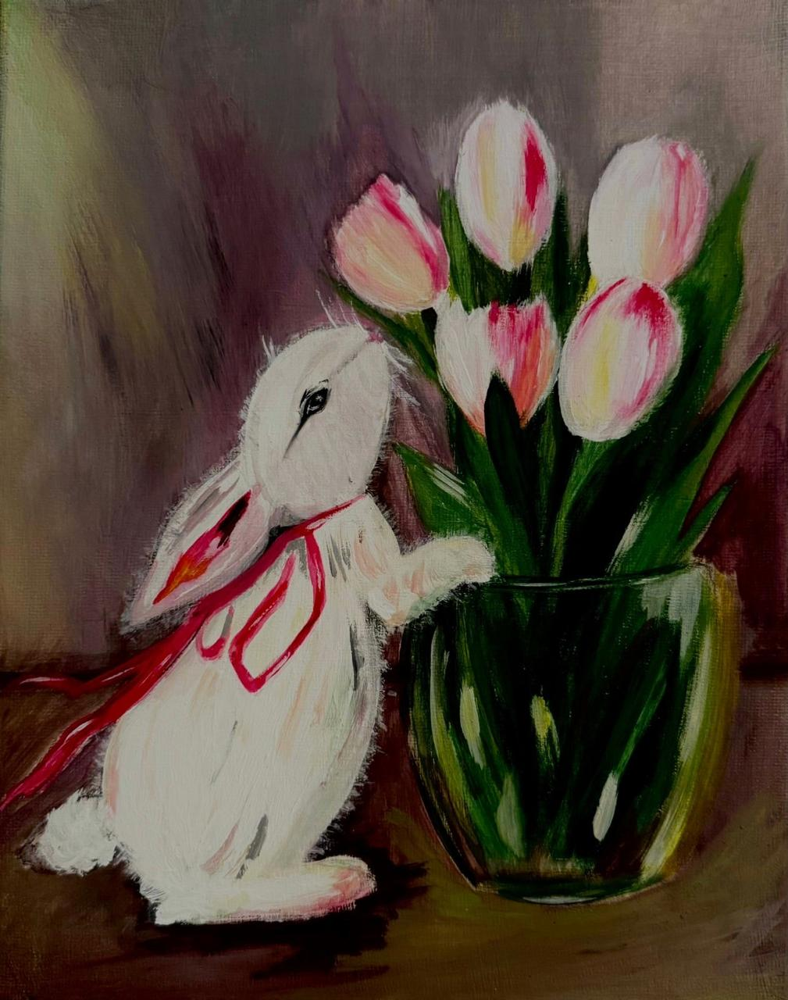
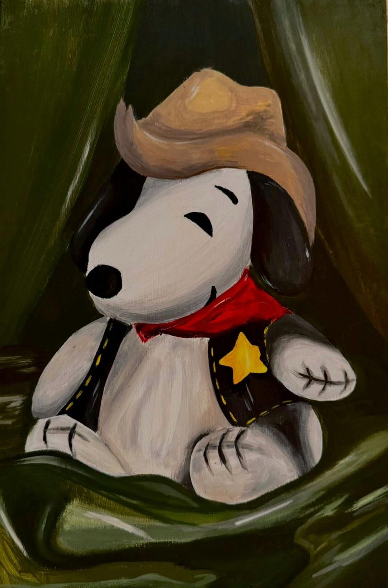
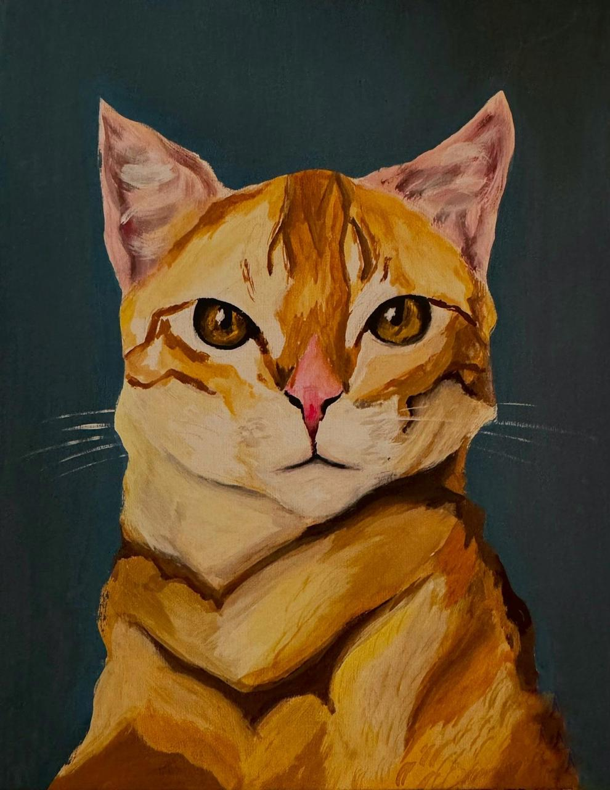
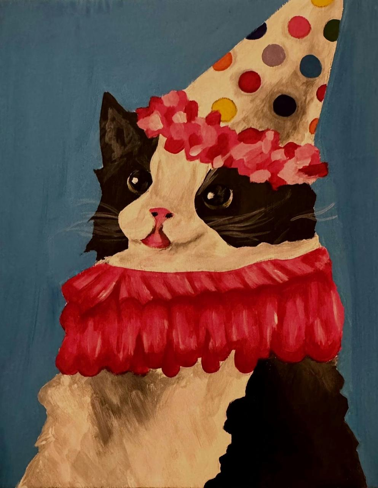
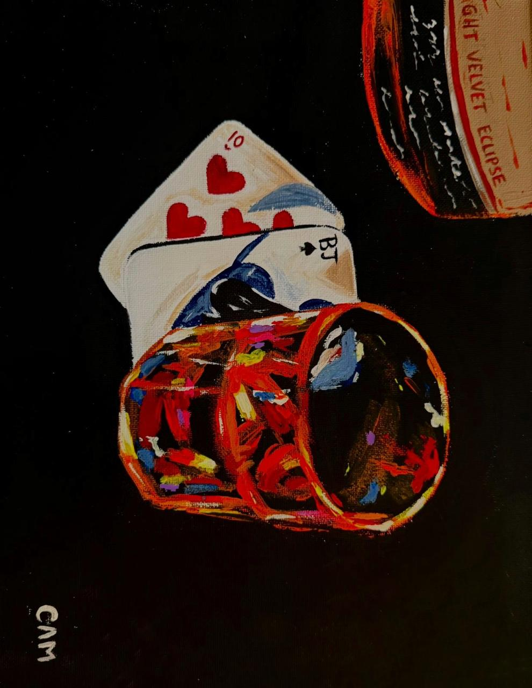
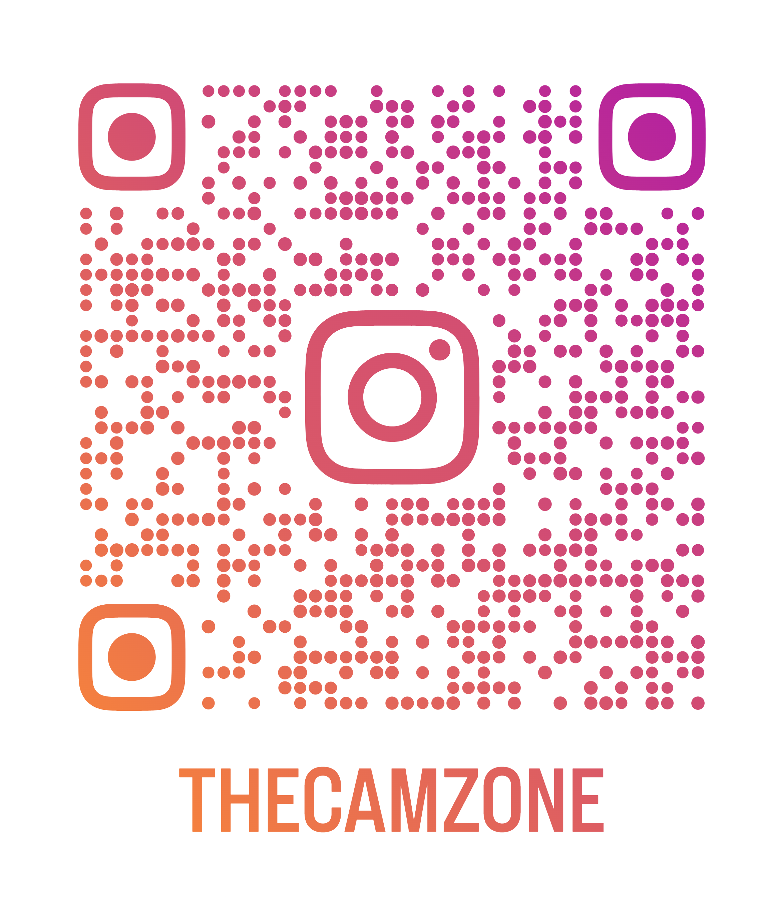

Soy estudiante de Diseño de la Comunicación Gráfica, con un fuerte interés en la creación visual como forma de expresión y narrativa. Mi trabajo se mueve entre el diseño y la pintura.
La pintura es parte fundamental de mi proceso creativo: a través de ella exploro color, textura y emoción.
Me interesa crear piezas que no solo sean funcionales, sino que también transmitan sensaciones y cuenten historias.
Actualmente continúo desarrollando mi estilo combinando lo manual y lo digital.









En mi cuenta de instagram comparto principalmente mis trabajos de arte y pintura, asi como procesos creativos y exploraciones visuales que forman parte de mi desarrollo como artista y diseñadora
